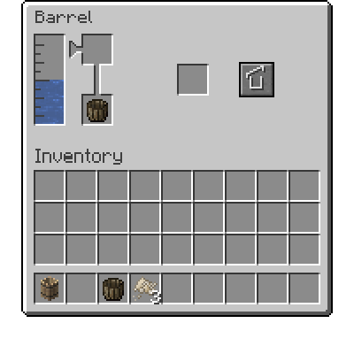

大桶是一種可以容納物品和液體的裝置。大桶中央的空格是用來放置物品的，液體則顯示在左側的水槽中。將桶或罐放在左上角的空格中可以將其中的液體新增到大桶、或將大桶中的液體盛出。拿著容器對著裝有液體的大桶按下右鍵也有同樣的效果。
桶介面
可以按螢幕右邊的按鈕來將大桶密封。密封狀態下的桶在被破壞時會保留其中的液體。部分配方必須在密封的大桶中才能製作。對著大桶空手Shift右鍵也可以切換大桶的密封狀態。
大桶的主要作用是用來混合某些液體和物品。用大桶合成時，桶內的液體和物品的比例必須正確無誤。某些配方還需要將大桶密封一段時間才能執行。
如果大桶中物品的比例和配方所需的不一致，多餘的物品或液體就會被浪費。但如果執行的是瞬時配方，則必須提供對應液體的足量物品才能進行。
配方: tfc:barrel/limewater
石灰水是由助焊劑溶於淡水製成的。每份助焊劑可轉化 500 mB 的淡水。石灰水可以用來加工皮革，還可以用來合成砂漿。
配方: tfc:barrel/tannin
鞣酸是一種將某些原木的樹皮溶於淡水中製得的酸性溶液。橡木、白樺木、慄木、花旗松木、山核桃木、楓木和紅杉木都可以用來合成鞣酸。
某些大桶配方需要以一定比例混合兩種液體。例如，以 9:1 的比例將奶與醋混合可以得到醋奶；醋和鹹水以相同比例混合可以得到滷水。這種配方只能透過先在大桶裡裝一種液體，然後把裝有另一種液體的陶罐或桶放在左上角的液體新增格內來完成。
大桶還可以用來快速冷卻其他物品。把熱的東西浸泡在一桶淡水、橄欖油或鹹水中就會很快冷卻下來。
大桶還可以用來染色和漂白物品。透過在陶鍋中煮沸單個染料物品就能製成染液。大多數可染色的東西，如地毯、蠟燭和雪花石膏等，都可以透過將它們密封在一桶染液中來染色。已染色的物品也可以透過將它們密封在一桶鹼液中來漂白。鹼液是透過在鍋水中煮沸草木灰製成的。草木灰可以透過破壞篝火獲得。
將食物封入裝有醋的大桶裡有助於延長其保質期。將任意水果密封在裝有酒精飲料的大桶中就能得到醋。有關於用醋保鮮的知識，請參看食物保鮮頁面。